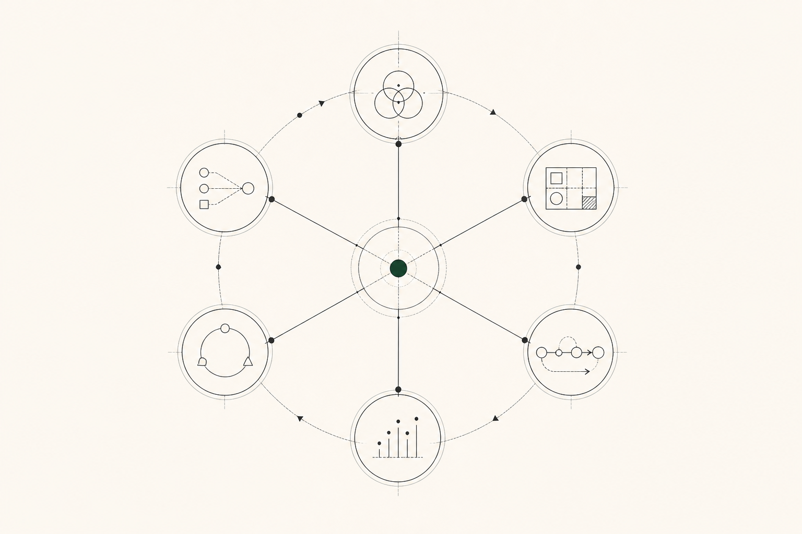

Project Management
Digital delivery, cross-functional coordination, Agile practices and technical operations.
I coordinate digital, technical and cross-functional work with an Agile delivery mindset — connecting priorities, people and follow-through.

Choose the context that matches your hiring or project need. Each route uses the same source experience, edited for relevance rather than inflated into a different career.
Digital delivery, cross-functional coordination, Agile practices and technical operations.
A transition-ready view of Scrum leadership, product launches, customer feedback and market research.
Project and product support for lean digital teams that need structure and dependable follow-through.
Experience snapshots derived from the supplied CV. The visual process samples demonstrate working methods; they are not confidential client deliverables.
Campaign coordination, executive-priority alignment and recurring-workflow improvements in a digital marketing and web-development environment.
Illustrative work sample — no confidential employer material.
View experienceScrum facilitation, two product initiatives, market signals and customer feedback brought into development discussions.
Illustrative work sample — no confidential employer material.
View experienceRF-link validation, network documentation, security handling, diagnostics and client-requirement translation.
Illustrative work sample — no confidential employer material.
View experiencePublic-sector operations, telecommunications, product delivery and digital marketing contribute different kinds of context to the same discipline: making work understandable and moveable.
Data quality, administration, meetings, records and coordination in Paraguay’s public sector.
Network support, documentation and diagnostic work in a telecommunications environment.
Scrum facilitation, product initiatives and customer-feedback integration.
Marketing campaigns, web-development context and cross-functional coordination.
Professional experience shown here is candidate-provided through a supplied CV. Ambiguous or conflicting percentages were deliberately omitted. Illustrative samples demonstrate working methods and do not represent confidential client work or employer endorsement.
Ask for supporting context